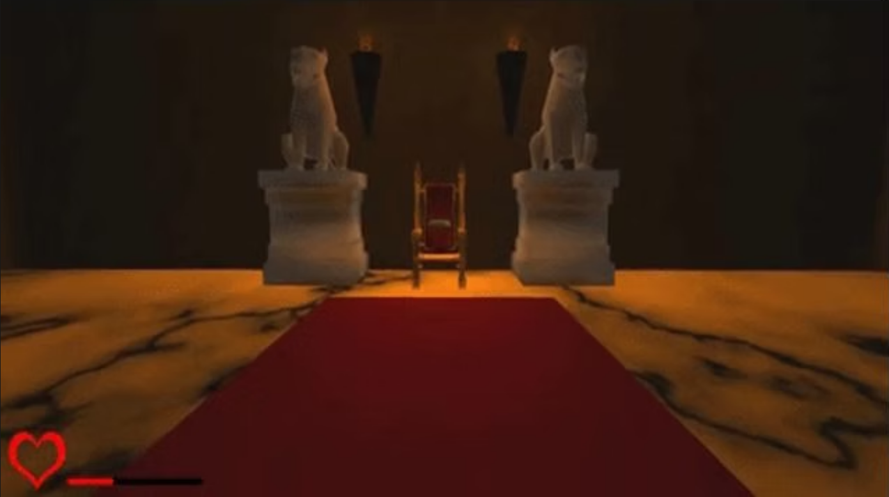

Project Description
The Hallway Project was my first coding experience where I went from having no programming knowledge to gaining a decent understanding of C++ and the Unreal Engine. This project involved creating an interactive environment where players could navigate through a hallway with various gameplay elements. It served as my introduction to game development and taught me the fundamentals of programming and working with a professional game engine.
GitHub Repository: https://github.com/MorganGravelat/Hallway_wIth_guard
What I Did
- Learned C++ programming from scratch
- Built interactive gameplay mechanics in Unreal Engine
- Created player movement and navigation systems
- Implemented basic game objects and environment interactions
Skills Learned
- C++ programming fundamentals
- Unreal Engine basics and Blueprint system
- Game development workflow and project structure
- Problem-solving and debugging techniques